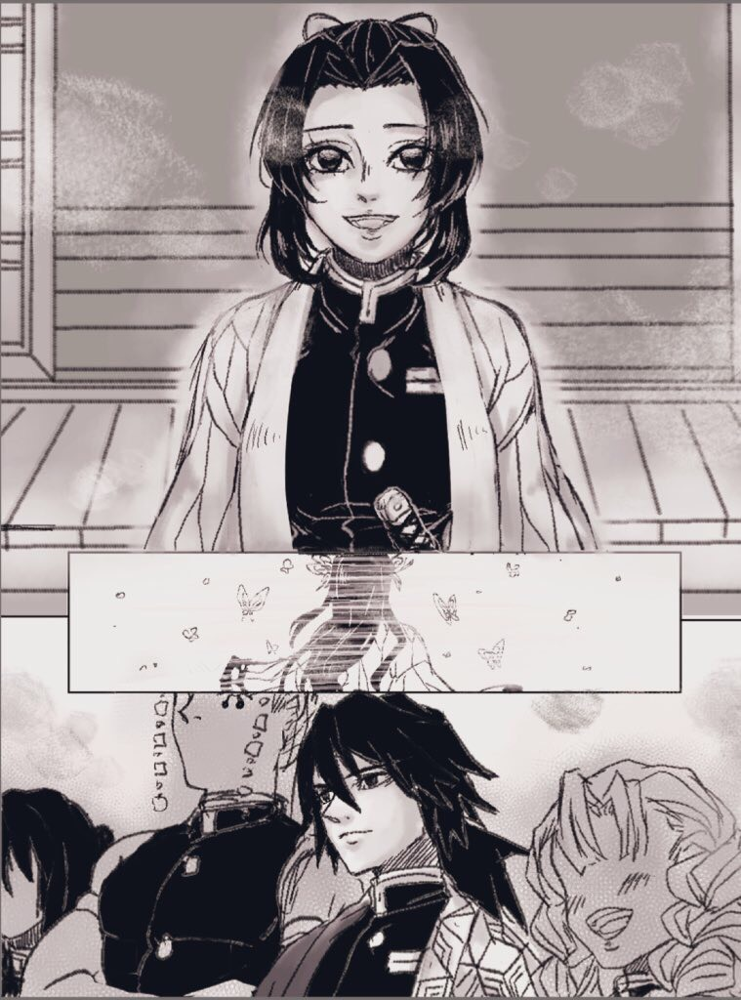

《片羽之蝶》
曾經以為目前的平靜可以一直持續下去。
儘管經歷了父母慘遭惡鬼毒手喪命的遭遇。
決定加入鬼殺隊，熬過嚴苛的修煉和最終試驗。
和姐姐成立了專職治療隊士的蝶屋敷，同時鑽研殺鬼的毒素與救人的醫術。
有時太過天真、心腸太軟，總是讓忍操心。
但是忍其實很依賴著唯一的姐姐。
不管是跟在身後，或是走在身旁，追隨著自己憧憬的姐姐的身影，對忍來說，姐姐是她的全世界。
直到某一天，世界崩解了。
＊＊＊
富岡接收到鎹鴉的訊息時，那天正下著雨。
胡蝶香奈惠死了。
總是讓忍無可奈何又拿她沒辦法的姐姐香奈惠。
總是認真聽他說話而絲毫不介意他溝通不良的同僚胡蝶香奈惠。
總是一邊殺鬼卻又同情他們，與身分毫不相稱的花柱胡蝶香奈惠。
總是溫和的笑看著大家、照顧隊士的香奈惠。
不復存在了。
閉上雙眼，腦中不住迴放著記憶的片段。
若說心情沒有受影響，那是騙人的。
身為鬼殺隊，就是刀口上的人生。
富岡自然想像過自己有一天可能會殉職，若真有那天，至少也要竭盡使命，戰到最後一刻。
「⋯⋯辛苦你了。」
富岡喃喃自語，也不太清楚是說給誰聽。
＊＊＊
撐著傘走到墓地時，已經是晚上了。
雨勢一點也沒變小，反倒有變大的趨勢。
雨水打在傘上，吵雜異常。
心裡的煩躁不知道是來自這個吵雜，還是前方不遠處那個不撐傘淋得一身濕透的少女。
富岡走近她的身旁，將少女納入傘下的空間。
也不知道這傢伙在這站了多久，富岡心底泛起一絲絲的不快，但想到她的處境，不快馬上就消散了。
「富岡先生。」
忍的聲音沒有平常的朝氣，卻也沒有情緒，平淡的像是路上偶遇的招呼。
富岡也不知道該說什麼，本來他就是不擅交談的人，何況現在已經改變不了既定事實了。
不是繼續往這條路走下去，就是退出。
當初在好友身故後選擇了堅持。即使撕心裂肺痛徹心扉，但他只能前進，因為不這麼做，只會有更多像他、像忍一樣的受害者。
「回去吧。」富岡輕聲道。
忍抬頭凝視著他，不發一語。
富岡的表情雖如同平常一般淡漠，但眼神中有一抹哀傷和同感。
她現在了解這個人的臉大概不是用來表現情緒的，眼睛才是。
他也經歷過類似的事。
忍沒有正面回應富岡的提議，而是向他靠近，頭輕輕的抵在他撐傘的那側臂膀。
「你有一天也會像姐姐那樣死去嗎⋯⋯？」
悶悶的聲音從側面傳來，富岡的右臂衣袖濕了一大片，分不清是雨水還是淚水。
「⋯⋯我不知道。」
富岡低聲道，他真的不知道。
而後是一陣沈默，莫約維持了三分鍾左右。
富岡卻感覺好像過了三小時那麼久。
忍緩緩的退開，臉上掛著一抹悲傷的微笑。
「時間不早了。」她幽幽的道，「我先失陪了，富岡先生。」
不等富岡回答，忍愀然轉身，離開了傘下。
「——」富岡望著她的背影。
那個嬌小的身姿微薄得像是會被雨霧給吞沒一般，可能一個沒注意就會稍縱即逝——
「——忍。」富岡忍不住出聲呼喚她。
忍停下腳步，側過頭。
「⋯⋯嗯？」
他有種錯覺，她就要往很遠的地方去，而且不再回來了。
「⋯⋯？」忍等待著富岡開口。
只見他欲言又止，可最後還是選擇什麼都沒說。
（一直都是這樣呢⋯⋯）
「你還是老樣子呢，富岡先生。」
忍淡淡一笑。
「——再見了。」
遙遠的，富岡只能看著忍的身影漸漸隱沒在雨中。
「忍⋯⋯」他再度輕喚，但這次誰也聽不到了。
這是他最後一次呼喚她的名字。
＊＊＊
再次見到忍時，是香奈惠逝世後的第一次柱合會議。
披上了大家再熟悉不過的蝶翅紋路的羽織，溫許的笑著。簡直就是——
「請多指教。」忍向其他柱們微微欠身，「我是新上任的蟲柱，胡蝶忍。」
富岡微微扯動眉毛。
忍沒有放過他難得的細微色變。
「富岡先生、你似乎有話想說？」
「⋯⋯沒什麼。」富岡一瞬間恢復了平時的神情，「恭喜你——」
他回望她澄澈而深邃的深紫色瞳孔。
「——胡蝶。」
不是原本稱呼慣的名字，而是許久不曾喚過的姓氏。
因為僅剩她一人了。
（完）
